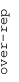
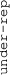

These results are also available as PDF and EPS documents.
Depending on your display resolution, scrolling or zooming may be necessary.
|  |
| 3 |
| 0 |
| -3 |
|  |
| GO_MITOCHONDRIAL_TRANSLATION GO_MITOCHONDRIAL_TRANSLATION | |||||||||||
| GO_MITOCHONDRIAL_GENE_EXPRESSION GO_MITOCHONDRIAL_GENE_EXPRESSION | |||||||||||
| GO_ORGANELLAR_RIBOSOME GO_ORGANELLAR_RIBOSOME | |||||||||||
| GO_MITOCHONDRIAL_TRANSLATIONAL_TERMINATION GO_MITOCHONDRIAL_TRANSLATIONAL_TERMINATION | |||||||||||
| GO_TRANSLATIONAL_TERMINATION GO_TRANSLATIONAL_TERMINATION | |||||||||||
| GO_MITOCHONDRIAL_LARGE_RIBOSOMAL_SUBUNIT GO_MITOCHONDRIAL_LARGE_RIBOSOMAL_SUBUNIT | |||||||||||
| GO_TRANSLATIONAL_ELONGATION GO_TRANSLATIONAL_ELONGATION | |||||||||||
| GO_ESTABLISHMENT_OF_PROTEIN_LOCALIZATION_TO_TELOMERE GO_ESTABLISHMENT_OF_PROTEIN_LOCALIZATION_TO_TELOMERE | |||||||||||
| GO_POSITIVE_REGULATION_OF_ESTABLISHMENT_OF_PROTEIN_LOCALIZATION_TO_TELOMERE GO_POSITIVE_REGULATION_OF_ESTABLISHMENT_OF_PROTEIN_LOCALIZATION_TO_TELOMERE | |||||||||||
| GO_PROTEIN_LOCALIZATION_TO_NUCLEOPLASM GO_PROTEIN_LOCALIZATION_TO_NUCLEOPLASM | |||||||||||
| GO_H4_H2A_HISTONE_ACETYLTRANSFERASE_COMPLEX GO_H4_H2A_HISTONE_ACETYLTRANSFERASE_COMPLEX | |||||||||||
| GO_HISTONE_H2A_ACETYLATION GO_HISTONE_H2A_ACETYLATION | |||||||||||
| GO_REGULATION_OF_HELICASE_ACTIVITY GO_REGULATION_OF_HELICASE_ACTIVITY | |||||||||||
| GO_NUCLEOTIDYLTRANSFERASE_ACTIVITY GO_NUCLEOTIDYLTRANSFERASE_ACTIVITY | |||||||||||
| GO_SWR1_COMPLEX GO_SWR1_COMPLEX | |||||||||||
| GO_RNA_POLYMERASE_III_COMPLEX GO_RNA_POLYMERASE_III_COMPLEX | |||||||||||
| GO_TRANSCRIPTION_BY_RNA_POLYMERASE_III GO_TRANSCRIPTION_BY_RNA_POLYMERASE_III | |||||||||||
| GO_LIGASE_ACTIVITY_FORMING_CARBON_OXYGEN_BONDS GO_LIGASE_ACTIVITY_FORMING_CARBON_OXYGEN_BONDS | |||||||||||
| GO_AMINO_ACID_ACTIVATION GO_AMINO_ACID_ACTIVATION | |||||||||||
| GO_RIBOSOMAL_SUBUNIT GO_RIBOSOMAL_SUBUNIT | |||||||||||
| GO_STRUCTURAL_CONSTITUENT_OF_RIBOSOME GO_STRUCTURAL_CONSTITUENT_OF_RIBOSOME | |||||||||||
| GO_LARGE_RIBOSOMAL_SUBUNIT GO_LARGE_RIBOSOMAL_SUBUNIT | |||||||||||
| GO_LIGASE_ACTIVITY GO_LIGASE_ACTIVITY | |||||||||||
| GO_MITOCHONDRIAL_SMALL_RIBOSOMAL_SUBUNIT GO_MITOCHONDRIAL_SMALL_RIBOSOMAL_SUBUNIT | |||||||||||
| GO_CDP_DIACYLGLYCEROL_METABOLIC_PROCESS GO_CDP_DIACYLGLYCEROL_METABOLIC_PROCESS | |||||||||||
| GO_POSITIVE_REGULATION_OF_CHROMOSOME_ORGANIZATION GO_POSITIVE_REGULATION_OF_CHROMOSOME_ORGANIZATION | |||||||||||
| GO_DNA_BIOSYNTHETIC_PROCESS GO_DNA_BIOSYNTHETIC_PROCESS | |||||||||||
| GO_TELOMERE_ORGANIZATION GO_TELOMERE_ORGANIZATION | |||||||||||
| GO_NUCLEAR_MATRIX GO_NUCLEAR_MATRIX | |||||||||||
| GO_NUCLEAR_PERIPHERY GO_NUCLEAR_PERIPHERY | |||||||||||
| GO_POSITIVE_REGULATION_OF_TELOMERE_MAINTENANCE GO_POSITIVE_REGULATION_OF_TELOMERE_MAINTENANCE | |||||||||||
| GO_REGULATION_OF_TELOMERE_MAINTENANCE GO_REGULATION_OF_TELOMERE_MAINTENANCE | |||||||||||
| GO_POSITIVE_REGULATION_OF_TELOMERE_MAINTENANCE_VIA_TELOMERE_LENGTHENING GO_POSITIVE_REGULATION_OF_TELOMERE_MAINTENANCE_VIA_TELOMERE_LENGTHENING | |||||||||||
| GO_POSITIVE_REGULATION_OF_CHROMATIN_ORGANIZATION GO_POSITIVE_REGULATION_OF_CHROMATIN_ORGANIZATION | |||||||||||
| GO_SPINDLE_ORGANIZATION GO_SPINDLE_ORGANIZATION | |||||||||||
| GO_PEPTIDYL_LYSINE_ACETYLATION GO_PEPTIDYL_LYSINE_ACETYLATION | |||||||||||
| GO_NEGATIVE_REGULATION_OF_DNA_RECOMBINATION GO_NEGATIVE_REGULATION_OF_DNA_RECOMBINATION | |||||||||||
| GO_ADENYLYLTRANSFERASE_ACTIVITY GO_ADENYLYLTRANSFERASE_ACTIVITY | |||||||||||
| GO_POSITIVE_REGULATION_OF_ENDOPLASMIC_RETICULUM_STRESS_INDUCED_INTRINSIC_APOPTOTIC_SIGNALING_PATHWAY GO_POSITIVE_REGULATION_OF_ENDOPLASMIC_RETICULUM_STRESS_INDUCED_INTRINSIC_APOPTOTIC_SIGNALING_PATHWAY | |||||||||||
| GO_MEMBRANE_PROTEIN_INTRACELLULAR_DOMAIN_PROTEOLYSIS GO_MEMBRANE_PROTEIN_INTRACELLULAR_DOMAIN_PROTEOLYSIS | |||||||||||
| GO_SYNAPTIC_VESICLE_CYTOSKELETAL_TRANSPORT GO_SYNAPTIC_VESICLE_CYTOSKELETAL_TRANSPORT | |||||||||||
| GO_TELOMERASE_HOLOENZYME_COMPLEX GO_TELOMERASE_HOLOENZYME_COMPLEX | |||||||||||
| GO_RESPONSE_TO_GAMMA_RADIATION GO_RESPONSE_TO_GAMMA_RADIATION | |||||||||||
| GO_RNA_MODIFICATION GO_RNA_MODIFICATION | |||||||||||
| GO_RNA_3_END_PROCESSING GO_RNA_3_END_PROCESSING | |||||||||||
| GO_REGULATION_OF_SISTER_CHROMATID_COHESION GO_REGULATION_OF_SISTER_CHROMATID_COHESION | |||||||||||
| GO_REGULATION_OF_SISTER_CHROMATID_SEGREGATION GO_REGULATION_OF_SISTER_CHROMATID_SEGREGATION | |||||||||||
| GO_MITOTIC_CELL_CYCLE_CHECKPOINT GO_MITOTIC_CELL_CYCLE_CHECKPOINT | |||||||||||
| GO_INTRINSIC_APOPTOTIC_SIGNALING_PATHWAY_IN_RESPONSE_TO_DNA_DAMAGE GO_INTRINSIC_APOPTOTIC_SIGNALING_PATHWAY_IN_RESPONSE_TO_DNA_DAMAGE | |||||||||||
| GO_SMALL_RIBOSOMAL_SUBUNIT GO_SMALL_RIBOSOMAL_SUBUNIT | |||||||||||
| GO_CHONDROITIN_SULFATE_PROTEOGLYCAN_METABOLIC_PROCESS GO_CHONDROITIN_SULFATE_PROTEOGLYCAN_METABOLIC_PROCESS | |||||||||||
| GO_C_ACYLTRANSFERASE_ACTIVITY GO_C_ACYLTRANSFERASE_ACTIVITY | |||||||||||
| GO_ETHANOL_CATABOLIC_PROCESS GO_ETHANOL_CATABOLIC_PROCESS | |||||||||||
| GO_EXTRACELLULAR_MATRIX_STRUCTURAL_CONSTITUENT GO_EXTRACELLULAR_MATRIX_STRUCTURAL_CONSTITUENT | |||||||||||
| GO_CYTOSOLIC_LARGE_RIBOSOMAL_SUBUNIT GO_CYTOSOLIC_LARGE_RIBOSOMAL_SUBUNIT | |||||||||||
| GO_POSITIVE_REGULATION_OF_PHOSPHATASE_ACTIVITY GO_POSITIVE_REGULATION_OF_PHOSPHATASE_ACTIVITY | |||||||||||
| GO_POSITIVE_REGULATION_OF_PHOSPHOPROTEIN_PHOSPHATASE_ACTIVITY GO_POSITIVE_REGULATION_OF_PHOSPHOPROTEIN_PHOSPHATASE_ACTIVITY | |||||||||||
| GO_ARYLSULFATASE_ACTIVITY GO_ARYLSULFATASE_ACTIVITY | |||||||||||
| GO_STEROID_ESTERIFICATION GO_STEROID_ESTERIFICATION | |||||||||||
| GO_REGULATION_OF_LYMPHOCYTE_APOPTOTIC_PROCESS GO_REGULATION_OF_LYMPHOCYTE_APOPTOTIC_PROCESS | |||||||||||
| GO_POSITIVE_REGULATION_OF_LYMPHOCYTE_APOPTOTIC_PROCESS GO_POSITIVE_REGULATION_OF_LYMPHOCYTE_APOPTOTIC_PROCESS | |||||||||||
| GO_DETECTION_OF_STIMULUS_INVOLVED_IN_SENSORY_PERCEPTION_OF_PAIN GO_DETECTION_OF_STIMULUS_INVOLVED_IN_SENSORY_PERCEPTION_OF_PAIN | |||||||||||
| GO_PEPTIDYL_SERINE_DEPHOSPHORYLATION GO_PEPTIDYL_SERINE_DEPHOSPHORYLATION | |||||||||||
| GO_PROTEIN_DEGLYCOSYLATION GO_PROTEIN_DEGLYCOSYLATION | |||||||||||
| GO_PROTEIN_DEMANNOSYLATION GO_PROTEIN_DEMANNOSYLATION | |||||||||||
| GO_CELLULAR_TRANSITION_METAL_ION_HOMEOSTASIS GO_CELLULAR_TRANSITION_METAL_ION_HOMEOSTASIS | |||||||||||
| GO_PYRIMIDINE_NUCLEOSIDE_MONOPHOSPHATE_METABOLIC_PROCESS GO_PYRIMIDINE_NUCLEOSIDE_MONOPHOSPHATE_METABOLIC_PROCESS | |||||||||||
| GO_REGULATION_OF_PROTEASOMAL_PROTEIN_CATABOLIC_PROCESS GO_REGULATION_OF_PROTEASOMAL_PROTEIN_CATABOLIC_PROCESS | |||||||||||
| GO_NEGATIVE_REGULATION_OF_COLLAGEN_METABOLIC_PROCESS GO_NEGATIVE_REGULATION_OF_COLLAGEN_METABOLIC_PROCESS | |||||||||||
| GO_BETA_CATENIN_DESTRUCTION_COMPLEX_DISASSEMBLY GO_BETA_CATENIN_DESTRUCTION_COMPLEX_DISASSEMBLY | |||||||||||
| GO_CELLULAR_MODIFIED_AMINO_ACID_BIOSYNTHETIC_PROCESS GO_CELLULAR_MODIFIED_AMINO_ACID_BIOSYNTHETIC_PROCESS | |||||||||||
| GO_STRIATED_MUSCLE_ADAPTATION GO_STRIATED_MUSCLE_ADAPTATION | |||||||||||
| GO_NEGATIVE_REGULATION_OF_T_CELL_PROLIFERATION GO_NEGATIVE_REGULATION_OF_T_CELL_PROLIFERATION | |||||||||||
| GO_NEGATIVE_REGULATION_OF_LEUKOCYTE_PROLIFERATION GO_NEGATIVE_REGULATION_OF_LEUKOCYTE_PROLIFERATION | |||||||||||
| GO_MRNA_3_END_PROCESSING GO_MRNA_3_END_PROCESSING | |||||||||||
| GO_CENTROMERIC_SISTER_CHROMATID_COHESION GO_CENTROMERIC_SISTER_CHROMATID_COHESION | |||||||||||
| GO_REGULATION_OF_CHROMOSOME_SEGREGATION GO_REGULATION_OF_CHROMOSOME_SEGREGATION | |||||||||||
| GO_CHROMATIN_REMODELING GO_CHROMATIN_REMODELING | |||||||||||
| GO_HISTONE_DEACETYLASE_COMPLEX GO_HISTONE_DEACETYLASE_COMPLEX | |||||||||||
| GO_SISTER_CHROMATID_SEGREGATION GO_SISTER_CHROMATID_SEGREGATION | |||||||||||
| GO_MITOTIC_SISTER_CHROMATID_SEGREGATION GO_MITOTIC_SISTER_CHROMATID_SEGREGATION | |||||||||||
| GO_ESTABLISHMENT_OF_RNA_LOCALIZATION GO_ESTABLISHMENT_OF_RNA_LOCALIZATION | |||||||||||
| GO_MRNA_TRANSPORT GO_MRNA_TRANSPORT | |||||||||||
| GO_RNA_EXPORT_FROM_NUCLEUS GO_RNA_EXPORT_FROM_NUCLEUS | |||||||||||
| GO_MRNA_EXPORT_FROM_NUCLEUS GO_MRNA_EXPORT_FROM_NUCLEUS | |||||||||||
| GO_NUCLEAR_EXPORT GO_NUCLEAR_EXPORT | |||||||||||
| GO_SAGA_TYPE_COMPLEX GO_SAGA_TYPE_COMPLEX | |||||||||||
| GO_TRANSCRIPTION_EXPORT_COMPLEX GO_TRANSCRIPTION_EXPORT_COMPLEX | |||||||||||
| GO_TRANSLOCATION_OF_MOLECULES_INTO_HOST GO_TRANSLOCATION_OF_MOLECULES_INTO_HOST | |||||||||||
| GO_REPLICATION_FORK GO_REPLICATION_FORK | |||||||||||
| GO_CHROMOSOME_TELOMERIC_REGION GO_CHROMOSOME_TELOMERIC_REGION | |||||||||||
| GO_RECOMBINATIONAL_REPAIR GO_RECOMBINATIONAL_REPAIR | |||||||||||
| GO_PROMOTER_SPECIFIC_CHROMATIN_BINDING GO_PROMOTER_SPECIFIC_CHROMATIN_BINDING | |||||||||||
| GO_LOW_DENSITY_LIPOPROTEIN_RECEPTOR_PARTICLE_METABOLIC_PROCESS GO_LOW_DENSITY_LIPOPROTEIN_RECEPTOR_PARTICLE_METABOLIC_PROCESS | |||||||||||
| GO_PROGRAMMED_NECROTIC_CELL_DEATH GO_PROGRAMMED_NECROTIC_CELL_DEATH | |||||||||||
| GO_NEGATIVE_REGULATION_OF_CELL_CYCLE_G1_S_PHASE_TRANSITION GO_NEGATIVE_REGULATION_OF_CELL_CYCLE_G1_S_PHASE_TRANSITION |